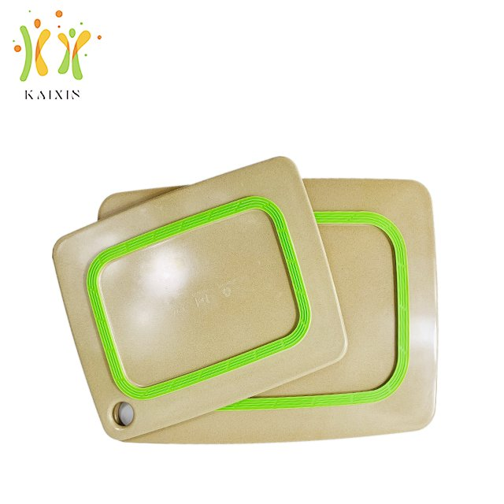
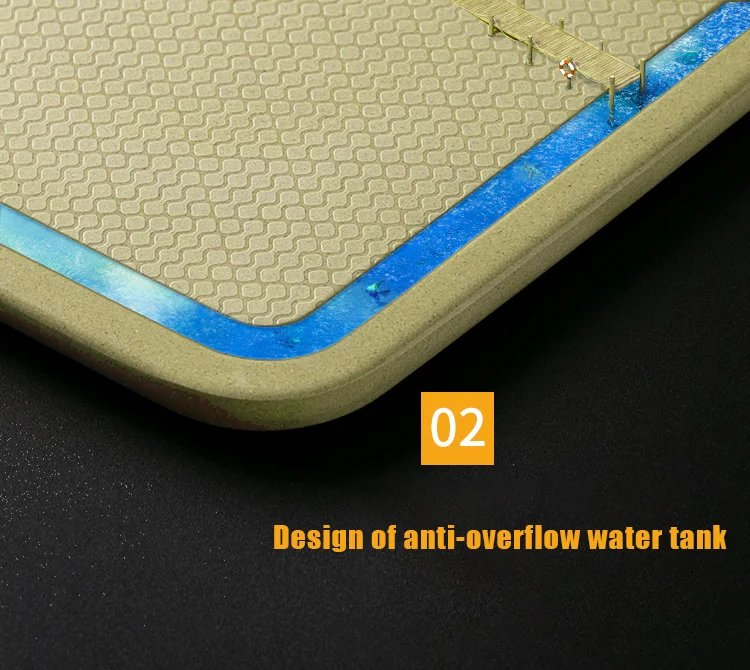

Rice Husk Cutting Board vs Bamboo vs Wood: Which Should You Stock?
Cutting boards look like the simplest product in any kitchen line — and that's exactly why the material choice gets made carelessly. Most catalogs default to bamboo because it's everywhere, or wood because it photographs well. But for an importer, retailer or private-label brand, the board material quietly decides your freight bill, your return rate, your care-instruction sheet and how the product reviews six months after purchase. This guide compares rice husk composite, bamboo and wood the way a buyer should: knife behavior, moisture, cleaning, shipping, customization and what each material costs you after the sale.

A rice husk fiber board — dense pressed surface, no oiling required, a fraction of wood's shipping weight.
First, What a Rice Husk Board Actually Is
Rice husk is the outer shell of the rice grain — an agricultural byproduct produced in enormous volume every harvest and historically burned or landfilled. In a rice husk composite board, the husk is milled to a fine grade and hot-pressed at high temperature into a dense, wood-like panel. There is no tree harvested and no bamboo plantation tapped; the feedstock is an annual waste stream. The result behaves more like a hard synthetic than like timber: it doesn't drink water the way wood grain does, it doesn't splinter, and it holds a flat, true surface through years of daily chopping. If you're new to the material, our introduction to rice husk tableware covers the basics; this article stays on cutting boards specifically.
Knife Behavior: The Detail Users Actually Feel
Ask home cooks what ruins a board and the top answers are knife dulling and deep gouges. The three materials behave very differently here:
Wood is the knife-friendliest surface — end-grain boards in particular let the blade slip between fibers. The trade-off is that those fibers also absorb moisture and knife marks, so a wood board is a maintenance relationship: regular mineral-oil treatments, no soaking, no dishwasher, and an expectation that the surface will scar over time.
Bamboo is technically a grass, and its strands are glued under pressure into planks. That makes bamboo boards harder than most wood — which sounds good until you notice what it does to knife edges over months of use, and how the glue lines can open along the laminations when the board is repeatedly wetted and dried. Delamination is one of the most common bamboo-board complaints in retail reviews.
Rice husk composite sits in its own category: the pressed surface is hard enough to resist deep scoring (scratches stay shallow and don't harbor debris the way open grain does), yet it has no laminated glue lines to separate. There's no oiling schedule, no seasonal cracking. Users who dislike the maintenance of wood but find bamboo too harsh on their knives generally land here — it's the low-attention option in the lineup.
Moisture, Cleaning and Care Instructions
Moisture is where cutting-board materials truly separate, because a board gets wet every single day. Wood swells, cups and can crack along the grain if it's soaked or machine-washed — which is why every wood board ships with a "hand wash only" card. Bamboo tolerates water better than solid wood but is still a laminated product, so repeated soak-and-dry cycles are what eventually open its seams. A rice husk board is non-porous at the surface: it cleans up with hand washing, or a standard dishwasher cycle, and it doesn't need to be conditioned, oiled or dried flat. For a retailer, that difference is your returns desk: "my board warped" and "my board split at the seam" are two of the most common kitchen-product returns, and both are structural behaviors of wood and bamboo, not of pressed rice husk.

Pressed rice husk surface with a molded juice groove — no glue lines, no grain to open.
The Cost You Ship: Weight and Freight
If you import by the container, weight is not a footnote — it's margin. Solid wood boards are the heaviest of the three, and thick hardwood boards (the kind that photograph beautifully) are dense enough that a pallet of them adds real freight cost per sellable unit. Bamboo boards are lighter but still fiber-dense. Rice husk composite boards are significantly lighter than both, which means more units per container and a lower landed cost per board — the same cube-versus-weight logic we broke down in our container loading and MOQ guide. For a distributor quoting landed cost to a chain or a retail group, that column alone can decide the deal.
Customization: Where Rice Husk Pulls Ahead for Private Label
Wood limits you to what the tree gives you — species, tone and grain. Bamboo is more uniform but still a fixed natural palette. Rice husk composite is molded, which changes the customization math entirely: the material takes pigment cleanly, so a board can be produced in a brand's own colorway (matched by Pantone reference at workable order quantities), embossed with a molded logo or finished with food-safe screen printing, and shaped with features like juice grooves, hanging holes or corner cutouts without fighting the grain. Our own rice husk chopping board and its multi-color line are both built this way, and the approach behind them is the same one we describe in our private-label rice husk program guide — logo tooling and Pantone matching are routine work here, not special orders.

Molded colorways: pigment goes into the material, not onto it — colors don't chip off.
Food Safety Paperwork: Ask Every Supplier the Same Question
Whichever material you buy, the professional move is identical: demand food-contact migration test documentation for the exact product and recipe, not a generic certificate for the material category. Wood and bamboo both have well-understood food use, but laminated bamboo raises the same question any bonded product does — what's in the adhesive, and is it documented? Rice husk composite suppliers vary too, so the burden of proof sits with whoever sells. Our boards come SGS tested for food contact, with reports available on request, alongside LFGB and REACH documentation for the European market. Treat a supplier's hesitation to share test reports for the specific SKU as a data point in itself.
Side-by-Side Summary
| Buyer criterion | Wood | Bamboo | Rice husk |
|---|---|---|---|
| Knife friendliness | Best — fibers give under the blade | Hardest on edges | Hard surface, shallow scratches |
| Moisture behavior | Swells/cups if soaked | Glue lines can open | Non-porous pressed surface |
| Care instruction | Hand wash + regular oiling | Hand wash preferred | Hand wash, or a standard dishwasher cycle |
| Freight weight | Heaviest | Moderate | Light — more units per container |
| Custom colors / logo | Laser engraving only | Engraving / print | Pantone-matched colors, molded or printed logo |
| Feedstock story | Harvested timber | Fast-growing grass + adhesives | Annual agricultural byproduct |
General patterns for retail-grade boards. Always confirm the specific SKU's documentation with the supplier.
So Which One Should You Stock?
Each material keeps a legitimate home. Wood belongs in premium and artisan lines where the customer enjoys maintaining the product and pays for the heft. Bamboo remains a fine budget option — just vet the lamination quality and read the reviews for seam failures. Rice husk is the strongest fit for the situations most of our buyers operate in: housewares retail where returns erode margin, private-label programs that need brand colors and logos, gift and promotional sets that ship in volume, and any catalog selling to customers who want an eco story backed by an annual-byproduct feedstock rather than harvested timber. A typical service life of three to four years of daily use, with no oiling and no warping complaints, is the quiet argument that shows up in repeat orders rather than in spec sheets.
Quick Checklist Before You Place the Order
✅ Request food-contact migration test reports for the exact board SKU, not the material category
✅ Ask for carton dimensions, pieces per carton and gross weight to compute true landed cost
✅ For bamboo, ask what adhesive system is used and how delamination is warranty-covered
✅ For private label, confirm Pantone matching, logo method (molded vs printed) and tooling costs in writing
✅ Check the care instructions you'll be legally comfortable printing on the packaging
✅ Sample-test one board through a full dishwasher cycle before committing a container
Frequently Asked Questions
Is a rice husk cutting board safe for food contact?
When it's made and tested properly, yes. The material is hot-pressed plant fiber with no open grain, and reputable manufacturers document it with third-party food-contact migration testing. Ours are SGS tested with reports available on request — and we'd give the same advice for any supplier: ask for the report for the specific SKU you're buying, not a general material certificate.
Do rice husk boards dull knives like bamboo?
Bamboo's hardness comes from its density and adhesive bonding, and it is noticeably harder on knife edges. Rice husk composite is also a hard surface, but scratches stay shallow rather than forming deep gouges, and users generally report gentler edge wear than bamboo. If knife-friendliness is the absolute top priority, wood — especially end-grain — still wins; rice husk wins on everything wood makes you pay for in maintenance.
Can rice husk cutting boards go in the dishwasher?
A rice husk board cleans up with hand washing, or a standard dishwasher cycle — no oiling or conditioning needed, unlike wood. If your use case involves specific commercial equipment, tell us your machine type, wash temperature and detergent at the inquiry stage and we will confirm the care protocol for the SKU you are ordering.
What customization is possible for a private-label board?
Molded colors matched to a Pantone reference, embossed or screen-printed logos, juice grooves, hanging holes and custom shapes are all routine work. Tooling and sampling are quoted per design; color matching typically has a workable minimum that makes even mid-size programs viable. Share your artwork and target quantities and we'll come back with a per-design quotation.
How long does a rice husk cutting board last?
In daily home and light commercial service, a typical service life is three to four years — comparable to a well-maintained wood board, but without the oiling schedule. It won't warp, cup or split along a seam because there is no grain and no lamination to fail.
Comparing board materials for your catalog?
Send us your target market, volumes and branding requirements. We'll reply with per-SKU specifications, our SGS food-contact reports, packing data for freight calculation and a sample quotation — custom colors and logo options included from our 5,000 m² facility.
Send InquiryPublished by Kaixin Eco Team · Shenyang Kaixin Technology Co., Ltd. — eco-friendly rice husk (plant fiber) dinnerware manufacturer since 2016, shipping to 40+ countries with full OEM/ODM support. Going deeper: browse the rice husk chopping board, see the full product range, or start from the Kaixin eco tableware homepage.